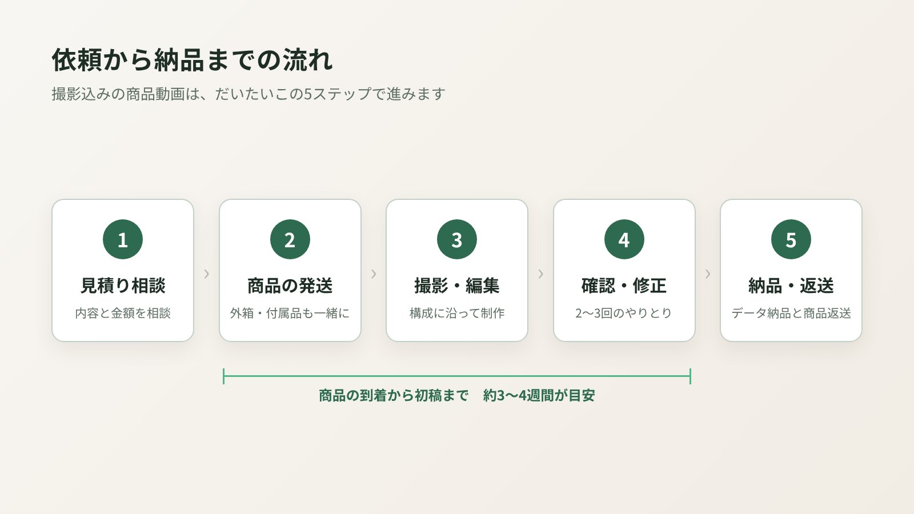
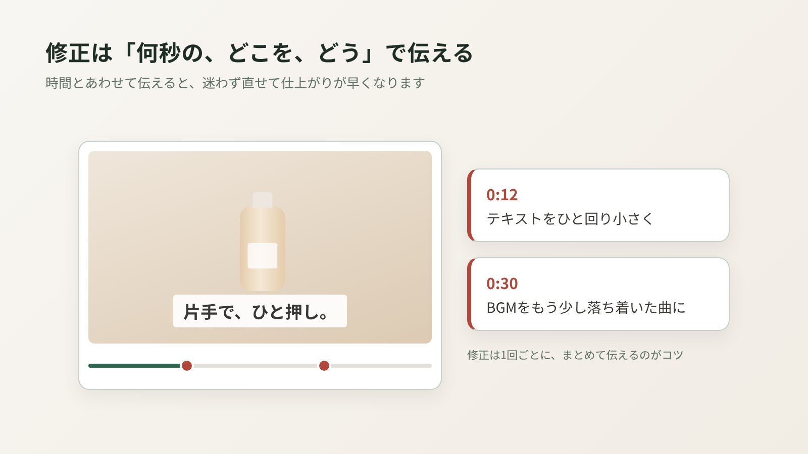

「商品動画を頼んでみたいけど、何を準備すればいいの？」「商品ってどうやって送るの？」——初めてのご依頼では、こうしたご質問をよくいただきます。この記事では、撮影込みで商品動画を依頼するときの流れと、事前に用意しておくと話が早く進むものを、700本以上の制作の中で見えてきたポイントとあわせてまとめました。初めての方でも、この記事を読めば「次に何をすればいいか」が分かるはずです。
依頼から納品までの、ざっくりした流れ

撮影込みの商品動画は、だいたい次の5ステップで進みます。nanase worksの場合を例にしていますが、個人の制作者に頼む場合はおおむね似た流れです。
- 見積り相談
商品の情報、使い道（Amazon・楽天・SNSなど）、イメージを伝えて、内容と金額をすり合わせます。参考にしたい動画があると、ここがぐっとスムーズになります。 - 商品の発送
内容が決まったら、撮影する商品を制作者に送ります。 - 撮影・編集
構成に沿って撮影し、編集して初稿を作ります。構成は、制作側から提案してもらえることも多いです。 - 確認・修正
初稿を見て、気になる点を伝えて直してもらいます。2〜3回のやりとりで仕上がることが多いです。 - 納品・商品の返送
完成データを受け取り、商品を返送してもらって完了です。
期間の目安は、商品が届いてから初稿まで約3〜4週間ほど（混雑状況で前後します）。セールや新商品の発売日など、掲載したい日が決まっている場合は、そこから逆算して早めに相談しておくのがおすすめです。お急ぎの場合は、特急の対応ができるかも最初に確認しておきましょう。
相談の前に、まとめておくと話が早いこと
見積り相談の段階で、次のことが分かっていると、やりとりの回数がぐっと減ります。全部そろっていなくても大丈夫です。「決まっていない」こと自体を伝えてもらえれば、制作側で一緒に考えられます。
| 伝えておきたいこと | 例 |
|---|---|
| 商品の情報 | 商品名、商品ページのURL、サイズ・重さ |
| どこに載せるか | Amazonの商品ページ、楽天、SNS広告など |
| 動画の形 | 横型・縦型・両方、尺の希望（例：45秒） |
| いちばん伝えたいこと | 「使い方の簡単さ」「サイズ感」「質感」など |
| 雰囲気のイメージ | 明るくナチュラル、高級感、ポップ など |
| 参考動画 | 「この動画のテンポ感が好き」というものがあればURLで |
| 納期の希望 | 掲載したい日、セールの日程など |
なかでも大事なのが「いちばん伝えたいこと」です。良いところが10個あっても、45秒前後の動画でしっかり伝えられるのは2〜3個ほど。ここが決まると、撮るべきカットも自然と決まっていきます。
あると助かる資料・素材
必須ではありませんが、次のものがあると、仕上がりのブレが少なくなります。
- 商品の説明資料：特長、使い方、スペックがまとまったもの（説明書や営業資料でもOK）
- ロゴやパッケージのデータ：動画の最後に商品名やロゴを入れる場合に使います
- 使ってほしくない表現の一覧：ブランドとして避けたい言い回しや、薬機法まわりで社内チェックがある場合はその基準
- 既存の商品画像：動画の色味や雰囲気を、商品画像とそろえたいときの参考になります
表現のルールは、Amazonの審査にも関わってきます。審査で引っかかりやすい表現については、こちらの記事で詳しくまとめています。
商品を送るときのポイント
撮影込みの場合、いちばん「どうしたらいいの？」と聞かれるのが商品の発送です。ここで押さえておきたいことを並べます。
- パッケージも一緒に送る
開封シーンや、パッケージと商品を並べたカットを撮ることが多いので、外箱や付属品もそろえて送っていただけると安心です。 - 使い切る・汚れる商品は、予備があると安心
食品、化粧品、洗剤など、使うと減ったり汚れたりする商品は、撮り直しに備えて複数あるとスムーズです。数が限られる場合は、事前に相談しておきましょう。 - サンプル品・試作品でも大丈夫
発売前の商品でも撮影できます。ただ、パッケージのデザインが変わる予定なら、映し方を工夫できるよう最初に伝えておいてください。 - 大きい・重い商品は、事前にサイズを伝える
家具やアウトドア用品など、組み立てや搬送が必要な商品は追加の手間がかかることがあります。サイズと組み立ての有無を先に伝えておくと、見積もりが正確になります。 - 送料と返送の扱いを確認しておく
送料（返送料を含む）をどちらが負担するかは、制作者によって違います。nanase worksでは、送料はご依頼者さまのご負担をお願いしています。
初稿を確認するときのコツ

初稿が届いたら、気になる点をまとめて伝えます。このとき、ちょっとした伝え方の違いで、仕上がりまでのスピードが変わります。
何秒のところを、どう変えたいかが分かると、制作側も迷わず直せます。修正は1回ごとにまとめて伝えるのもポイントです。小分けに何度も送るより、一度に全部伝えたほうが、無料の修正回数も有効に使えます。
なお、Amazonや楽天に掲載したあとで審査に引っかかることもあります。審査エラーへの対応がどこまで料金に含まれるかも、依頼前に確認しておくと安心です（nanase worksでは、審査エラーに伴う修正は掲載まで無制限で対応しています）。
よくある質問
何も決まっていない状態で相談してもいいですか？
はい、大丈夫です。「こんな商品なんだけど、動画にできる？」という段階からのご相談がいちばん多いです。商品のURLだけでもお送りいただければ、そこから一緒に内容を考えます。
撮影にはどのくらいの期間がかかりますか？
nanase worksの場合、商品の受け取りから初稿まで約3〜4週間が目安です（混雑状況により変動します）。お急ぎの場合は、約10日で初稿をお出しする「お急ぎ納品」オプションもあります。
オンラインでの打ち合わせはできますか？
nanase worksでは、オンラインミーティングは行っておらず、メールやChatworkでやりとりしています。文章で残るので、あとから内容を見返しやすいのも良いところです。
撮影した商品は返してもらえますか？
はい、納品後にご返送します。送料（返送料を含む）はご依頼者さまのご負担となりますので、あらかじめご了承ください。
最後に
準備することを並べると多く見えますが、実際には「商品のURL」と「いちばん伝えたいこと」さえあれば、十分にスタートできます。足りない部分は、こちらから質問しながら一緒に埋めていくので、どうぞ気負わずにご相談ください。
むしろ、「この動画を見た人に、何を感じてほしいか」を一緒に考える時間が、いちばん大切な工程だと思っています。そこがはっきりすると、撮影も編集も、迷わず進められるからです。
はじめての方も、まずはお気軽にご相談ください
nanase worksでは、ヒアリングと構成のご提案から、撮影・編集まで一貫して商品動画を制作しています。「何を準備すればいいか分からない」という段階からでも大丈夫です。